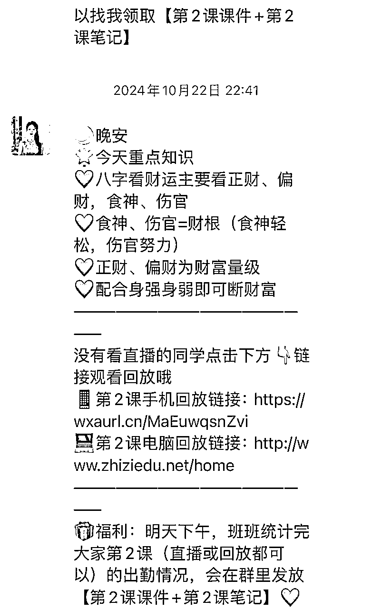
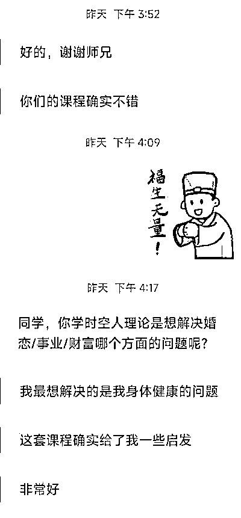

来源：https://acnjhmfl3twy.feishu.cn/docx/TQ9gdeBC7oGr21x25socmRgKnTe
1个月时间，1套国学课程如何做到200万成交额？如何让1万人付费进入私域？
这篇文章主要复盘我从2024.9开始做国学项目的经历，我们3人小团队初入国学赛道亲身验证的实战方法，以及遇到的问题、需要避开的坑。如果你对国学/身心灵赛道感兴趣，看完你将收获国学赛道行业玩法解析，以及个人/小团队如何入局干货内容。
我是泓瑾，base杭州，我自从毕业就在某TOP3美妆公司工作，一直在玩儿付费流，累积也花过上亿的预算。因为长年在流量行业里积累，一直希望能够在当前环境下，找到一条可以深入下去的赛道。
我选择赛道的逻辑，主要是基于这个行业
1、获取流量的难易度
2、毛利相对有空间，可以通过付费放大
3、一定要有私域（从公域获取到的用户，不仅仅只有一转价值）
那么根据这个思路，最优先排除的是传统电商标品，供应链没有竞争力不说，毛利相对平台太透明，虽然起步简单、门槛低，但对产品体系，供应链的要求太高，没有成本优势很难靠个人团队玩的转
我的优势在于对流量平台规则的理解，以及周围一些合作很久的付费流资源，那么寻找一个产品体系相对完善（好抄，易上手），个体启动难度不高的赛道，最适合的一定是“教育类”，（课程产品市场上相对成熟，无论是前端引流or后端升单，都有现成做的好的头部玩家），又因为我一直对身心灵比较感兴趣，本科在美国学数学的时候就参加了很多冥想活动，读书期间也自学了西玄的占星，那符合我理想中可以做的赛道确定是国学/身心灵。
先跟大家分享一下国学赛道的整体概况，经济下行身心灵赛道变的非常热门，平时说起来都很神秘，大国小国、苏州帮什么的，其实这个生意闭环非常简单，主要就是三个板块：流量x产品x销售
当初在准备做这个项目的时候我体感很深的是流量一定是这个赛道最重要的环节，目前市面上相对卡审比较松的平台是百度、快手和B站。
先介绍一下我自己比较熟悉且实践下来收益不错的B站，这个平台很容易被大家忽视，前期项目时间线是这样的，2024年9月在B站成功打造了一篇爆款内容，这篇内容在一个月内实现了全网1500w的播放量，为我们带来了10万粉丝，并迅速吸引了1w用户付费199元进入私域，成为我们的种子学员。
这篇内容带来成果的关键步骤是：内容打磨 x 投流转化
每个平台适合的内容都不一样，B站说实话是对内容要求最高的平台了，它要求你讲逻辑、有干货，2000字的商业内容，精准回答了用户最关心的三个问题：
我是谁？为什么要学习命理？为什么要跟我学习命理？
你会发现这几篇爆款内容师傅都没有出镜，即使不出镜，也能通过声音传递出强大的感染力，口音天津口音四川口音，自带吸引力。当然了，能出镜是最好的，信任度会增加。我们从内容发布之初就带有明确的转化链接引私域，在自然流量表现良好的前提下果断放量，确保爆款内容的影响力最大化，这个时期投放ROI也是比较高的，对B站打粉视频模板感兴趣的朋友可以私聊我沟通。
前期无论以什么方式打粉，想要长久做，IP一定是比打粉更重要的，尤其是大国。在做这个项目之前我一直都认为IP难做，尽管身边有好朋友很擅长做IP，但我以前一直认为要遇到合适的苗子以及有一个操盘手，这都是可遇不可求的。在做这个项目的过程中，我会发现IP的成功就是概率，30%IP本身+20%操盘+50%运气，如何去提高IP的成功概率？就是多试多跑，同时多个种子IP去试，试的越多成功率越高。如果有师傅恰巧看到这里，欢迎跟我们合作，或者你身边有合适的人选也欢迎推荐。
内容部分，AI可以帮我们做什么？
确定人设、内容选题、账号三件套，甚至服化道可以快速落地，选题确定了逐字稿也可以让AI写，这一步可以多换几个AI比如豆包Gemini等等，最终确定哪个版本文风更适合。AI产出内容的方式方法互联网上有很多教程，我这里就不展开分享了，AI结合到各个工作环节是降本增效的核心，工具的上限一定是取决于人的，我们自己也有一套AI工作流给内容和私域。
配合AI测IP是很快的，2周就能看出效果，主要关注数据和师傅和团队的配合，我最近签约了几个师傅，在视频号发布5篇内必爆。我前后接触了差不多100个师傅，有些师傅的问题在于有专业能力但没有用户思维，很多人根本不管用户到底想解决什么问题，自说自话。不会用工具的话，产出内容的速度非常有限，包括也有师傅不愿意去演绎我们提供的爆款内容。有互联网思维的师傅很多自己就能闭环，只要你会抄，再配合AI，内容是源源不断的，自然流保证更新频率总有内容会爆，爆过的内容也会一直爆。师傅既可以接咨询也可以教课程。对于大部分师傅来说，难点是执行力以及销转能力，你想想一个人，又要更新内容引流又要服务客户，这个工作量是有多大，师傅本人一旦toC，销转就很难做到位，因为你接触客户多了你就不神秘了，身价就很难往上抬。
所以有一定能力的师傅跟靠谱机构合作是很完美的事情，既可以把剪辑之类的杂事分出去，又可以专心内容和产品交付，像我们这样的团队还可以帮助扩大流量，销转更不用说，隔了一层师兄（销售），师傅的神秘性和客单价kuku往上涨，定期直播露个面，客户都很尊重，感恩戴德。
下面这几位是在B站起家，闭环做的比较好的IP，人设、内容选题、服化道你都可以参考，他们同步视频号的数据也很好，前期选中一个平台为主平台很重要，就像之前说的每个平台适合的内容风格是不一样的，龙女塔罗光充电就有13w，大航海3k/月，她自己也有课程，每年收入保守估计都上千万。

在这个阶段人员分工是很简单的，不用分销售和店铺运营，也不分一转二转的，从接线到升单一条龙，我会关注师傅后续的内容安排，投放和剪辑都直接外包，B站很适合小团队/个人初期积累种子用户。
传统的国公司采用百度AD和搜索的流量来源会比较多，ROI差不多可以做到0.4-0.6，算上平台返点应该会更高一些，人群画像主要是中老年人。我这里所说的传统大国公司是类似苏州的通义缘、大乾门这种，大国和小国的区别从产品端就开始了，大国产品以教育为主，小国产品以咨询和手串、法会为主。
传统大国公司除了百度，抖音也会直播打粉，但打粉总是有波动，抖音监管也比较严格。他们前段时间出事的很多，主要原因就是前端打不平，但后端销售养在那里，一定得保证进粉量，这样就避免不了买粉。
买粉有三个问题：
第一是要压钱，大国转化周期比小国要长很多，0元进线转3k的一转周期是7天，一转转化率非常低，一般能做到1.5%-3%都算不错了。3k转2w的二转周期一般是30-45天，要扛住这个周期，很多需要买粉的大国公司得压千万在进粉这个环节，所以做大国的门槛是要比小国高很多的。
像苏州很多大国公司，前端资金压力在这边，后端是没有容空间的，只能用各种方式逼单，恐吓客户，这就很容易被举报、被投诉。
第二是信任度低，买来的粉只能强行洗，因为ta不是被你自己的内容吸引来的，信任度低转化就会低。
第三是容易被骗，我身边很多这种事情，买的是大国粉，到手的是睡眠粉、大健康粉，大国粉是比小国粉等等要贵的，你被骗了也没地方去说，只能认了。
我们继续说回到百度的流量，搜索和信息流一般是以下这些展现形式，你搜风水会看到很多大国内容，你搜八字出现在大多是小国的内容。

大国0元进线的交付产品一般是是5天4夜的直播，里面包含八字风水奇门遁甲等等等很多课程种类，百度引流直播间你可以看到大部分是分析户型图，有真人出镜讲的也有纯手播，告诉你财位是哪里应该放什么东西，这些内容能让用户立刻动起来，拿出自己家的户型图做对比，跟老师互动“放富贵竹行不行”，直播间里也会提醒免费上课、免费领资料吸引用户加进私域，市面上这类爆款内容非常多，拿到就能播，不一定要自己写。小国的前端进线一般是咨询报告，让你添加销售帮你解读。
整体来说，百度不是特别适合个人/小团队入局，从前端到后端无论是流量、产品还是销售都需要不小的人力。
微信生态获取流量的方式除了大家熟知的视频号，公众号的粘性其实也很强，以及没什么人注意到的KOC分发。
视频号比较大的问题卡审，无论是自然流还是商业流都有这个问题，如果教育这个大盘平台的流量目标达到了，就不太会给国学放量，审核就特别严格，等于对平台来说国学就是个补流量的板块。
商业流内容一般以下这两个形式，这个roi只会比百度低不会比百度高，但人群画像应该会比百度优质。
这种方式进线的交付跟百度差不多，如果有开白的能力，wx生态的链路会更加丝滑，一旦要跳转不同平台，或多或少都有流失。
s智界s是一个很好的自然流玩法案例，这样的玩儿法也比较适合内容能力强的个人和小团队。他们的内容风格跟我们B站的爆文类似，门槛比较高，很像半佛仙人之类的知识区博主，不是以出镜博取受众的信任，完全是通过干货吸引，这样的内容粘性非常强，小而美的典型。我记得我18年什么都不懂的时候就有关注他们的矩阵公众号，那时候他们是以小国服务为主的，在当时收费就近4位数，放在现在来看都是远高于市场价的，这就是干货输出带来的强粉丝粘性和高客单价。
公众号还有一个KOC分发，很容易被大家忽视，标题都是很经典的“团队准备解散了”“您已关注xxx满一年，可免费领取”，可以直接在长文里挂二维码引0元进线，也可以挂低客单的引流课，这个引流方式的roi远高于大家想象。
我了解到的一家做佛学的公司通过这种方式吸引进线，前端甚至还能赚。当然佛学粉跟道家粉还是有区别，佛学整体体量较小，全国3500w左右，然后佛学粉比较随缘，不像道家粉你带着需求进线，可以直接转，佛学粉普遍需要养一段时间，节奏没有道家粉这么快，盈利点在佛学粉买随喜/祈福服务都不是一份一份买，很多100-300的链接都是十份百份的下单，佛学的产品也会做的比较多元化。
这两个平台我本人没有实践过，所以这里只简单跟大家分享我收集到的信息。小红书的商业流审核比较严格，多是自然流为主，其中很多IP是西占为主，比如占星、塔罗，国学除了店铺账号，主打一个费号流，发起号内容，或者在热门内容的评论区截流，没有300个手机不建议尝试。
市面上的流量玩法基本是上面这些，对于刚入局的玩家来说，选中一个平台配合一个高效的打粉方式是非常重要的，我个人推荐B站和wx生态。
小国学的进线成本会比大国要低，具体进线成本多少算合理要看配合的销售转化率，如果销售够强，很多公司都能接受进线roi低一些，综合我自己接触的行业内公司来看，赚钱的是两类，要么是很早就入局，有一整套自己的SOP，要么是前端就挣钱的，这样给了后端很大的容错。而前端挣钱这件事情不一定大团队才能做到，现阶段反而是个人/小团队容易做到。我们自己的项目是做付费流起量的，所以前期会比较看重付费流，项目进行到现在，前端流量想要打平甚至赚钱，IP是最重要的，没有之一，其次是引流品，可以是课程也可以是产品，下个部分我会展开分享。
出了B站爆款之后跟第一位师傅没有再继续合作，双方对商业的理解出入太大，1w私域也送给他了，然后我把重心放在了产品设计和私域运营上，在两个月内复制了一个拥有2万粉丝的IP，实现了100万的课程成交额。说是IP其实没有真人出镜，全靠有说服力的声音，这段时间我一直在测试IP。
国学赛道流量至关重要，但是差异化竞争的产品和精细化的私域运营也不可或缺。市面上国学课程同质化挺严重的，大多采用“0元进线+5场直播”的模式，内容也多集中于八字、风水等。传统大国公司进线大概是这个SOP，每天催直播到课，直播课一般是5场，包含八字风水姓名学等等类目，不是一个老师讲，第三场开始强营销，私域销售会配合直播课的销转做跟单，一转销售基本就是怼话术，活人感很弱，只筛选不说服，所以传统大国公司0转3k能做到1.5%就不错了。

我们的引流品有几十节课，内容师傅出，我们负责给每节初阶课精心设计作业和明确的进阶课程“钩子”，激发学员的持续学习兴趣和付费意愿。在初级课程学习的前5天里，学员会与“师兄”（销售）进行至少5轮的深度互动。这种高频次的互动，有助于建立信任关系。我们的二次转化周期设定为14天，这两周给学员充分的时间来消化学习，我们在进线1天、3天、5天都会回访来建立连接，第7天的时候直播转化。即使很多客资最终没有转化高客单课程，但也能转化为咨询服务或者手串等效果产品。基于对用户信任建立的重视，我们通过师傅直播、朋友圈打造、1v1答疑和定期分享等方式，持续为学员提供价值，并逐步引导他们向更高阶的课程或服务转化，这个转化周期比传统大国周期要短且无退款。
销转在流量够的情况下花时间都能磨出来适合且有效的SOP，主要就是话术和朋友圈，转化率和转化周期要看产品和线索的质量。这个部分反而要关注的是风险，有很多国学公司2个销售会配1个风控，每天看聊天记录，我们现在人比较少，大部分聊天记录我前期天天都会看。一转销售没有国学知识完全按照SOP走都能成单，二转就需要有一定专业知识了，一般二转销售能贡献70%的营业额。做小国想转大国是比较难的，但一般做大国的公司都会顺带做小国，因为学习的人毕竟是少数，小国测算是刚需。

抖音平台上最近有很多有意思的引流品，比如说针对负债老板的聚宝盆，针对学生家长的文昌塔，这些产品本质还是情绪需求，比如说焦虑、迷茫。之前我刷到过佛学唐卡和道教的书，客单很难过百，新出现的这些引流品客单都挺高的，预估卖1w件不成问题，卖完就换还能有私域。直播间的老人家是绿幕，主要是主播在卖，合适的IP加上合适品，前端很难不赚钱。
大国的后端产品主要是进阶课/线下课，这个只要做到正常交付就不会有太大问题，可以算是整个商业闭环里最不重要的了。
什么样的人适合入局国学赛道？
一类是懂内容、懂流量的人，另一类是懂产品的人，销转没有那么重要。如果你懂流量，无论是自然流还是商业流，可以广撒网去做国学IP。如果你本身就是师傅，教学、咨询都擅长，也有出镜口播的能力，欢迎找我合作。一定要明确自己的能力点位、资源点位是什么，手里有什么牌，刚起步的时候能打爆一篇商业内容，离不开熟悉的内容团队和商业流团队。
今天的分享就到这里。这个项目还在努力中，我也在不断学习。希望能合作一些想扩大流量的国学师傅，也希望能和更多志同道合的朋友多多交流，一起探索这个赛道的更多可能性。